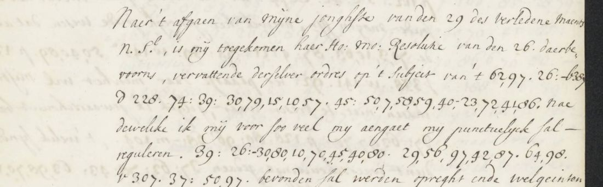

At a glanceKey from adjacent plaintext · partial (95% of the cipher)
- The letter
- Coenraad van Beuningen, Dutch envoy in London, to Gaspar Fagel, Westminster, 23 May/2 June 1676.
- Where
- Nationaal Archief 3.01.18, inv. 249, scans 131–132. This letter has no contemporary decipherment.
- The cipher
- Homophonic letter numbers, colon-marked word codes and a letter-prefixed alphabetical nomenclator, among clear Dutch passages.
- How it was deciphered
- Key recovered based on adjacent plaintext. The clerks’ interlinear glosses of sibling letters in inv. 248 (1675), 249 (1676) and 250 (1677) provided the key. Extent: partial.
- What it says
- Du Plat and two Frenchmen are to hire bylanders at Bruges. Van Beuningen distrusts his informer and recommends secrecy and possible arrests.
- Still open
- Twelve residual I tokens and unread s439; retaining gemelte adds g121 to the I count. The strict reading is 264/278 (94.96%); the 95.32% result is conditional.
- Credit
- Decipherment by Feyseel Nur, with Claude and Codex. Both Codex reviews are retained with the evidence.

01 The letter and the sibling glosses
The letter occupies scan 131 right and scan 132 left and right. Its 278 cipher tokens are interspersed with clear text. A braced spelling counts once; clear words, insertion brackets and superscript endings add no tokens. The key was rebuilt from thirty transcription files of glossed siblings in the three annual volumes. Some glosses belong to a later hand, which matters to the coverage.
No earlier reading of the June letter was found in the sources checked, and no contemporary decipherment accompanies it. The interlinear plaintext belongs to other letters, and the historical summaries concern earlier correspondence.
02 The plan and the informer
… op ’t Subject van ’t MY aen-gebracht dessein op den BRIEL ende HELLEVOET …
The French dessein concerns Den Briel and Hellevoetsluis. Du Plat and two Frenchmen are to cross to Bruges to hire, or buy, bylanders. A pass names Thomas Straught and a party of men; their number remains uncertain. Most of the English soldiers are to learn of the plan only when they can no longer turn back.
Du PLATT heeft ondertusschen EEN pas voor EENEN THOMAS STRAUGHT … afgehaelt …
Van Beuningen suspects that the informer is seeking a reward. He nevertheless pays a sum through a burgher who must refund it if the information is false. The amount is not established. He recommends secrecy, considers asking Brussels to arrest Du Plat with the two Frenchmen at Bruges, and reports Amsterdam rumours about holding back Bastiaensz’s fleet.
The Dutch reading, line by line
Upper case marks spelled cipher words. Question marks mark inferred values. Brackets retain unresolved readings or editorial explanations; spacing and inflections are editorial.
131R.01 Naer 't afgaen van myne jonghste van den 29 des verledene Maents 131R.02 N.St., is my toegekomen haer Ho: Mo: Resolutie van den 26. daerbe- 131R.03 voorens, vervattende derselver ordres op 't Subject van 't MY aen- gebracht 131R.04 dessein op den BRIEL ende HELLEVOET Nae 131R.05 dewelike ik my voor soo veel my aengaet my punctuelyk sal- 131R.06 reguleren. den aen- BRENGER BLYFT MY 131R.07 verseeckeren dat HY bevonden sal werden opreght ende welgeinten- 131R.08 tioneert te syn, ende heeft my wesen seggen, dat op gisteren [ins DU PLAT ende ] 131R.09 met de twee over gekomen Franschen DE Zee souden passeren ende 131R.10 voorts naer BRUGGE gaen om de BYLANDERS 131R.11 in te HUYREN [ins ofte koopen ] Ik ben niet sonder sterck- 131R.12 mistrouwen van dat men soude mogen uytwesen om my te mis- 131R.13 leyden, ende dat misschien de geprojecteerde toeleg by Vranckryck 131R.14 niet IS op- genomen , maar dat sulcx gefingeert wert om eenige 131R.15 recompense te trecken , ende dat niet alleen om dat sigh veele on- 131R.16 waerschynelyckheden aen my in T aen- gebrachte VERtoonen 131R.17 ALS OM dat den MAN seer IMPORTUNE 131R.18 aen- HOUT op DE recompense Ik heb geweygert YETS 131R.19 te geven voor dat ick mede PROVEN souden hebben 131R.20 ALS woorden(?) ende parolen(?) DIE men kan [...] doch heb 131R.21 eyndelyck aen een bekent Burger, die HY participant(?) heeft gemaeckt 131R.22 van syn secreet [t218: som onzeker; tweehondert?] STEERLS uyt- [ins GE ] REICKT 131R.23 om aen den voorschreven aen- BRENGER GETELT te 131R.24 werden obligerende sigh den voorschreven BURGER die aen MY 132L.01 te restitueren indien DE Waerachtigheit van T aen- brengen 132L.02 niet nader consteert(?) Du PLATT heeft ondertusschen EEN 132L.03 pas voor EENEN THOMAS STRAUGHT 132L.04 ende dertigh(?) mannen afgehaelt, dat ick op sodanigh groot 132L.05 papier hebbe doen engrosseren(?) als hiernevens gaat om dat het bekent 132L.06 soude mogen syn, hoewel het genoegh soude wesen dat alleen 132L.07 de NAEM vande gemelte(?) op den welcken HET pas 132L.08 Staet geweten(?) worden ter plaatse daar men het wil misbruyken, 132L.09 indien niet te vresen waar, gelyk ik gewaarschouwt ben, 132L.10 dat MYN paspoort sullen werden naer- gemaeckt , 't welk synde soo 132L.11 dient waerschouwinge gedaen dat men sigh door MYNE 132L.12 paspoort niet laet abuseren 132L.13 'T is niet sonder grote reden (myns oordeels) dat haar Ho: Mo: 132L.14 in bedenken nemen of men de saecke dient secreet te houden 132L.15 OM DE toeleger te ATTRAPPEREN Want 132L.16 die men in vaertuyg(en)(?) souden brengen sullen ENGELSCHEN 132L.17 syn , ende uytgeset weenigh officieren die in 't COMPLOT 132L.18 PART hebben sullen SE bestaen uyt soldaten die men 132L.19 niet onderrechten(?) sal voor dat- SE soo verre sullen syn dat- SE 132L.20 niet sullen connen te RUGH keeren 132L.21 Ook verneem ik uyt schryven van Luyden buyten de Regieringe 132L.22 tot Amsterdam dat alrede daer sterck gerught is van aen- 132L.23 schryvinge by haar Ho: Mo: gedaen tot voorkominge van EEN 132L.24 toeleg op den BRIEL ende onder anderen dat 132L.25 DE VLOTE tot HET CRUYSEN 132L.26 GEDESTINEERT onder den Luytenant Admirael 132L.27 BASTIAENSE ten dien aensien souden op- GEHOUWDEN 132L.28 syn dat ik echter niet wil hopen. 132R.01 Indien aldaar de ordres tot voorkominge van T voorschreven dessein 132R.02 gestelt niet secreet GEHOUDEN connen werden Soo laat 132R.03 ik UWelEd. Gestr.e in bedenken, ofte niet naer BRUSSEL 132R.04 DIENT geschreven OM den voorschreven DU PLATT 132R.05 MET DE twee Franschen tot BR[U]GGE te [ins soecken(?) te ] ATTRAPPEREN ende tot 132R.06 uytvorsinge van haer LOGEMENTEN van- VERRE daer naer doen vernemen(?) ten huyse van den 132R.07 koopman vanden STRAETEN in Myne laatse vermelt; [struck through: ...] soo het maar waar is 't geene my soo is aengebraght. Waer mede ik verblyve.
03 What the key supports
The homophonic alphabet spells names and other words. Colon-marked numbers carry common words; letter-prefixed groups form a partly alphabetical nomenclator. The interlinear glosses supply direct values, while context and alphabetical position suggest others. These forms of evidence are kept separate.
| Scenario | Strict H+C+M |
|---|---|
| All gloss sources and our gemelte | 264/278 (94.96%) |
| Excluding later-hand glosses | 263/278 (94.60%) |
| Only if g121 is read as the glossed selve and the later-hand genomen is accepted | 265/278 (95.32%) |
Same-code direct gloss support is 241/278 (86.7%). The figures are the Codex re-measure. H+C+M refers to the historical evidence bands, where H meant a sibling gloss and C included contextual spelling. In the repository convention H means a primary key, C known plaintext, M uncertain and I inferred. There is no primary key sheet here, and no aggregate repository-grade count is claimed.
The twelve residual I tokens and one unread token remain even under the conditional 95.32% scenario. Some are clustered; the mede clause remains awkward. Coverage therefore does not establish that 95% reads as coherent Dutch. The extent remains PARTIAL.
The blind-test accounting is corrected to M 10/10, I 3/6, with one near match and two misses among the I predictions. The key was not cleanly blind: files already cited scan-128 glosses, and s250 was later revised to s258. In the recorded shuffle control, 93% of spelled words of four or more letters are Dutch, against a 1.2% mean over 1,000 shuffled keys, maximum 11.6%. This tests the spelling layer, with a fixed names and historical-spellings list; it does not validate inferred codes or syntax. The control was not rerun for this addition.
04 Corrections and remaining gaps
- o177 = ondertusschen, not onder anderen; n155 = genomen gives op-genomen, with a later-hand witness.
- z108 is z103 = Zee, after the digit correction. b386 = brengen; the 272L bylegginge attribution was a misread.
- m161 = mede is attested, but “mede proeven … als woorden ende parolen” remains awkward.
- g121 = gemelte remains I; the alternative gloss selve is M. “Den selven” would add editorial inflection.
- v274, proposed as vernemen in June, conflicts with verwondert in another letter. It remains I.
- t218, the sum paid, remains I. Tweehondert is uncertain; hundreds elsewhere use a number plus h165 = hondert.
- The twelve residual I tokens are c324, d210, e274, o211, p113, p122, s254, t218, v111, v274, w141 and w204. Their proposals are marked in the reading. Retaining gemelte adds g121 as a thirteenth I token.
- s439 remains unread in the sup- range. Sweeren is not retained. The conflicting men/can glosses for 63: also remain unresolved.
These are open-codes gaps. The unglossed siblings at 1676 scans 118, 218–219, 1677 scan 86, and 1675 scans 190, 238–239 remain workable. No complete reading of them is claimed. The earlier upgrade report and both reviews remain in the evidence; the second review supersedes the unconditional 265/278 claim.
Full texts
The transcription and the decryption of every document on this page, so that the reading can be used and checked. Short files are shown here; all are in the repository.
Westminster, 23 May/2 June 1676, NA 3.01.18 inv. 249 scans 131-132
Van Beuningen, Dutch envoy in London, reports to Fagel on a French design against Den Briel and Hellevoetsluis: Du Plat and two Frenchmen are to cross to Bruges to hire or buy bylanders, and Du Plat has a pass for Thomas Straught and a party of men. He distrusts the informer, recommends secrecy, and considers asking Brussels to arrest Du Plat at Bruges.
Transcription
# NA 3.01.18 inv. 249 scans 131 (right) - 132 (left, right). Van Beuningen to Fagel, Westminster 23 May / 2 June 1676. Clerk's hand, no decipherment.
# Code letters: the clerk writes long-s (no crossbar) for S-codes (s153,s169,s250,s254,s285,s338,s439) and crossed f only in f160.
# Tokens: NN: colon word | NN:- colon word used as compound prefix | x123 letter-code (^sfx = superscript ending) | {a,b,..} spelled sequence | plaintext in ~...~ | [ins ...] interlinear insertion by the clerk
131R.01 ~Naer 't afgaen van myne jonghste van den 29 des verledene Maents~
131R.02 ~N.St., is my toegekomen haer Ho: Mo: Resolutie van den 26. daerbe-~
131R.03 ~voorens, vervattende derselver ordres op 't Subject van 't~ {62,97} 26:- b387
131R.04 d228 74: 39: {30,79,15,10,57} 45: {50,7,58,59,40,23,72,41,86} ~Nae~
131R.05 ~dewelike ik my voor soo veel my aengaet my punctuelyk sal-~
131R.06 ~reguleren.~ 39: 26:- {30,80,10,70,45,40,80} {29,56,97,42,87} {64,98}
131R.07 v307 37: {50,97} ~bevonden sal werden opreght ende welgeinten-~
131R.08 ~tioneert te syn, ende heeft my wesen seggen, dat op gisteren~ [ins {36,25} {74,56,5,86} 45:]
131R.09 ~met de~ t216 75: k137 f160^n {37,10} z103 79: p129 ~ende~
131R.10 ~voorts~ 68: {30,79,23,45,47,10} g100 ~om de~ {31,97,57,26,70,37,10,80,82}
131R.11 58: 83: {50,22,97,79,7,69} [ins ~ofte~ k140] ~Ik ben niet sonder sterck-~
131R.12 ~mistrouwen van dat men soude mogen uytwesen om my te mis-~
131R.13 ~leyden, ende dat misschien de geprojecteerde~ t139 36: v511
131R.14 69: {15,83} 74:- n155 ~, maar dat sulcx gefingeert wert om eenige~
131R.15 r157 83: t175 ~, ende dat niet alleen om dat sigh veele on-~
131R.16 ~waerschynelyckheden aen my~ 58: {87} 26:- b387^e {25,10,79} t140
131R.17 {27,57,84} {72,62} 37: 39: {63,5,70} 77: {15,63,74,20,79,87,23,69,7}
131R.18 26:- {50,20,21,87} 74: {37,10} r157 ~Ik heb~ w176 {97,10,88,82}
131R.19 83: g205 88: 37: 57: m161 {75,80,20,21,22,10,70} 79: 53:
131R.20 {27,57,82} w204 45: p113 {37,14,10} 63: 59: s439 ~doch heb~
131R.21 ~eyndelyck aen een bekent Burger, die~ {50,97} p122 54: m104
131R.22 86: 81: s169 t218 {82,87,7,6,79,56}^s 89:- [ins {45,10}] {79,10,12,32,55,87}
131R.23 ~om~ 26: 39: v487 26:- {30,79,10,70,46,7,80} {47,40,87,41,57,88} 83:
131R.24 96: ~obligerende~ 78: 39: v487 {31,25,79,47,7,81} ~die~ 26: {62,97}
132L.01 83: r452 i169 {37,10} ~Waerachtigheit~ 86: {86} 26:- b386
132L.02 69: n103 c324^t ~Du~ {74,57,27,86,88} 54: o177 {7,10,70}
132L.03 p127 88: {10,41,70,6,69} {87,51,20,62,5,84} {83,88,81,27,23,45,51,87}
132L.04 45: d210 m131 ~afgehaelt, dat~ 57: 74: s285 g269
132L.05 p112 52: 42: e274 ~als hiernevens gaat om dat het bekent~
132L.06 ~soude mogen syn, hoewel het genoegh soude wesen dat alleen~
132L.07 ~de~ {70,3,10,63} 87: g121 74: 39: w145^n {50,40,89} p127
132L.08 s338 w141 92: ~ter plaatse daar men het wil misbruyken,~
132L.09 ~indien niet te vresen waar, gelyk ik gewaarschouwt ben,~
132L.10 37: {63,97,70} p128 80: 96: 68:- m104 ~, 't welk synde soo~
132L.11 ~dient waerschouwinge gedaen~ 37: 63: 78: 43: {63,98,70,10}
132L.12 p128 69: l127^t a125
132L.13 ~'T is niet sonder grote reden (myns oordeels) dat haar Ho: Mo:~
132L.14 ~in bedenken nemen of men de saecke dient secreet te houden~
132L.15 {72,62} {37,10} t139^er 83: {5,87,88,79,4,75,73,7,79,40,69} ~Want~
132L.16 ~die~ 63: 58:^en v111 79: b386 80: {40,69,45,10,57,82,33,50,7,67}
132L.17 81: ~, ende uytgeset weenigh~ o129 ~die in 't~ {32,72,62,75,57,20,87}
132L.18 {73,5,80,86} 53: ~sullen~ {82,10} b259 89: s258 ~die~ 63:
132L.19 69: o211 76: 88: 37:- {82,10} ~soo verre sullen~ 81: 37:- {84,40}
132L.20 69: 80: 60: 83: {79,25,48,50} k101
132L.21 ~Ook verneem ik uyt schryven van Luyden buyten de Regieringe~
132L.22 ~tot Amsterdam dat alrede daer sterck gerught is van aen-~
132L.23 ~schryvinge by haar Ho: Mo: gedaen~ 85: v477 86: {7,6,67}
132L.24 t139 74: 39: {30,79,15,10,57} ~ende onder anderen~ 37:
132L.25 {37,10} {25,56,20,87,10} 85: {50,10,87} {33,79,23,97,82,7,70}
132L.26 {45,10,36,7,83,87,15,70,7,9,80,86} 72: 39: l163 a172
132L.27 {29,26,84,87,15,27,7,69,83,40} ~ten dien aensien~ 79: 74:- {45,10,50,20,21,92,37,10,69}
132L.28 81: ~dat ik echter niet wil hopen.~
132R.01 ~Indien aldaar de ordres~ 85: v477 86: {87} v487 d228
132R.02 ~gestelt~ 69: s169 {45,10,50,20,22,37,7,68} 60: 96: ~Soo laat~
132R.03 ~ik UWelEd. Gestr.e in bedenken, ofte~ 69: 68: {29,79,25,82,84,10,57}
132R.04 {37,15,10,70,87} s153 {72,62} 39: v487 {37,23} {74,57,5,86,87}
132R.05 {64,10,87} {38,40} t216 f160^n 85: {28,79,46,47,10} 83: [ins s254 83:] {26,86,89,79,5,74,75,10,80,40,70} 45: 85:
132R.06 ~uytvorsinge~ 86: 51: {57,20,47,10,64,7,70,86,6,70} 86:- {23,40,81,80,10} 38: 68: 42: v274 83:^n h188^e 86: 39:
132R.07 k144 87:^n {82,86,79,5,7,87,6,69} 58: ~Myne laatse vermelt; [struck through: ...] soo het maar waar is 't geene my soo is aengebraght. Waer mede ik verblyve.~Decryption
# Van Beuningen to Fagel, Westminster 23 May/2 June 1676 (NA 3.01.18 inv. 249 scans 131-132). Plaintext lower case; deciphered words UPPER CASE (spelled) or as code readings; (?) = grade I (inferred); [...] = unread. 131R.01 Naer 't afgaen van myne jonghste van den 29 des verledene Maents 131R.02 N.St., is my toegekomen haer Ho: Mo: Resolutie van den 26. daerbe- 131R.03 voorens, vervattende derselver ordres op 't Subject van 't MY aen- gebracht 131R.04 dessein op den BRIEL ende HELLEVOET Nae 131R.05 dewelike ik my voor soo veel my aengaet my punctuelyk sal- 131R.06 reguleren. den aen- BRENGER BLYFT MY 131R.07 verseeckeren dat HY bevonden sal werden opreght ende welgeinten- 131R.08 tioneert te syn, ende heeft my wesen seggen, dat op gisteren [ins DU PLAT ende ] 131R.09 met de twee over gekomen Franschen DE Zee souden passeren ende 131R.10 voorts naer BRUGGE gaen om de BYLANDERS 131R.11 in te HUYREN [ins ofte koopen ] Ik ben niet sonder sterck- 131R.12 mistrouwen van dat men soude mogen uytwesen om my te mis- 131R.13 leyden, ende dat misschien de geprojecteerde toeleg by Vranckryck 131R.14 niet IS op- genomen , maar dat sulcx gefingeert wert om eenige 131R.15 recompense te trecken , ende dat niet alleen om dat sigh veele on- 131R.16 waerschynelyckheden aen my in T aen- gebrachte VERtoonen 131R.17 ALS OM dat den MAN seer IMPORTUNE 131R.18 aen- HOUT op DE recompense Ik heb geweygert YETS 131R.19 te geven voor dat ick mede PROVEN souden hebben 131R.20 ALS woorden(?) ende parolen(?) DIE men kan [...] doch heb 131R.21 eyndelyck aen een bekent Burger, die HY participant(?) heeft gemaeckt 131R.22 van syn secreet [t218: som onzeker; tweehondert?] STEERLS uyt- [ins GE ] REICKT 131R.23 om aen den voorschreven aen- BRENGER GETELT te 131R.24 werden obligerende sigh den voorschreven BURGER die aen MY 132L.01 te restitueren indien DE Waerachtigheit van T aen- brengen 132L.02 niet nader consteert(?) Du PLATT heeft ondertusschen EEN 132L.03 pas voor EENEN THOMAS STRAUGHT 132L.04 ende dertigh(?) mannen afgehaelt, dat ick op sodanigh groot 132L.05 papier hebbe doen engrosseren(?) als hiernevens gaat om dat het bekent 132L.06 soude mogen syn, hoewel het genoegh soude wesen dat alleen 132L.07 de NAEM vande gemelte(?) op den welcken HET pas 132L.08 Staet geweten(?) worden ter plaatse daar men het wil misbruyken, 132L.09 indien niet te vresen waar, gelyk ik gewaarschouwt ben, 132L.10 dat MYN paspoort sullen werden naer- gemaeckt , 't welk synde soo 132L.11 dient waerschouwinge gedaen dat men sigh door MYNE 132L.12 paspoort niet laet abuseren 132L.13 'T is niet sonder grote reden (myns oordeels) dat haar Ho: Mo: 132L.14 in bedenken nemen of men de saecke dient secreet te houden 132L.15 OM DE toeleger te ATTRAPPEREN Want 132L.16 die men in vaertuyg(en)(?) souden brengen sullen ENGELSCHEN 132L.17 syn , ende uytgeset weenigh officieren die in 't COMPLOT 132L.18 PART hebben sullen SE bestaen uyt soldaten die men 132L.19 niet onderrechten(?) sal voor dat- SE soo verre sullen syn dat- SE 132L.20 niet sullen connen te RUGH keeren 132L.21 Ook verneem ik uyt schryven van Luyden buyten de Regieringe 132L.22 tot Amsterdam dat alrede daer sterck gerught is van aen- 132L.23 schryvinge by haar Ho: Mo: gedaen tot voorkominge van EEN 132L.24 toeleg op den BRIEL ende onder anderen dat 132L.25 DE VLOTE tot HET CRUYSEN 132L.26 GEDESTINEERT onder den Luytenant Admirael 132L.27 BASTIAENSE ten dien aensien souden op- GEHOUWDEN 132L.28 syn dat ik echter niet wil hopen. 132R.01 Indien aldaar de ordres tot voorkominge van T voorschreven dessein 132R.02 gestelt niet secreet GEHOUDEN connen werden Soo laat 132R.03 ik UWelEd. Gestr.e in bedenken, ofte niet naer BRUSSEL 132R.04 DIENT geschreven OM den voorschreven DU PLATT 132R.05 MET DE twee Franschen tot BR[U]GGE te [ins soecken(?) te ] ATTRAPPEREN ende tot 132R.06 uytvorsinge van haer LOGEMENTEN van- VERRE daer naer doen vernemen(?) ten huyse van den 132R.07 koopman vanden STRAETEN in Myne laatse vermelt; [struck through: ...] soo het maar waar is 't geene my soo is aengebraght. Waer mede ik verblyve. # Editorial notes: z108 corrected to z103 = Zee; b386 = brengen (272L bylegginge was a misread). # mede is attested, but mede proeven ... als woorden ende parolen remains awkward. # g121 gemelte remains I; the alternative selve is M and changes strict coverage only conditionally. # v274 vernemen(?) conflicts with the gloss verwondert in 250 103R. # s439 is unread in the sup- range. Hundreds elsewhere use a number plus h165 hondert. # Inflections consteert, laet and welcken are editorial expansions, not extra cipher tokens.
Reading
# Van Beuningen to Fagel, Westminster 23 May/2 June 1676 (NA 3.01.18 inv. 249 scans 131-132): reading Rests on: `reading.txt` (same text). Written out for the v3 verification (23 Oct 2026) without its manuscript line labels and editorial-note lines, which the scorer counts as holes; line breaks kept, nothing else changed. Notation as in reading.txt: plaintext lower case; deciphered words UPPER CASE (spelled) or as code readings; (?) = inferred; [...] = unread; [ins ...] = the writer's insertion. Dutch. ## Reading Naer 't afgaen van myne jonghste van den 29 des verledene Maents N.St., is my toegekomen haer Ho: Mo: Resolutie van den 26. daerbe- voorens, vervattende derselver ordres op 't Subject van 't MY aen- gebracht dessein op den BRIEL ende HELLEVOET Nae dewelike ik my voor soo veel my aengaet my punctuelyk sal- reguleren. den aen- BRENGER BLYFT MY verseeckeren dat HY bevonden sal werden opreght ende welgeinten- tioneert te syn, ende heeft my wesen seggen, dat op gisteren [ins DU PLAT ende ] met de twee over gekomen Franschen DE Zee souden passeren ende voorts naer BRUGGE gaen om de BYLANDERS in te HUYREN [ins ofte koopen ] Ik ben niet sonder sterck- mistrouwen van dat men soude mogen uytwesen om my te mis- leyden, ende dat misschien de geprojecteerde toeleg by Vranckryck niet IS op- genomen , maar dat sulcx gefingeert wert om eenige recompense te trecken , ende dat niet alleen om dat sigh veele on- waerschynelyckheden aen my in T aen- gebrachte VERtoonen ALS OM dat den MAN seer IMPORTUNE aen- HOUT op DE recompense Ik heb geweygert YETS te geven voor dat ick mede PROVEN souden hebben ALS woorden(?) ende parolen(?) DIE men kan [...] doch heb eyndelyck aen een bekent Burger, die HY participant(?) heeft gemaeckt van syn secreet [t218: som onzeker; tweehondert?] STEERLS uyt- [ins GE ] REICKT om aen den voorschreven aen- BRENGER GETELT te werden obligerende sigh den voorschreven BURGER die aen MY te restitueren indien DE Waerachtigheit van T aen- brengen niet nader consteert(?) Du PLATT heeft ondertusschen EEN pas voor EENEN THOMAS STRAUGHT ende dertigh(?) mannen afgehaelt, dat ick op sodanigh groot papier hebbe doen engrosseren(?) als hiernevens gaat om dat het bekent soude mogen syn, hoewel het genoegh soude wesen dat alleen de NAEM vande gemelte(?) op den welcken HET pas Staet geweten(?) worden ter plaatse daar men het wil misbruyken, indien niet te vresen waar, gelyk ik gewaarschouwt ben, dat MYN paspoort sullen werden naer- gemaeckt , 't welk synde soo dient waerschouwinge gedaen dat men sigh door MYNE paspoort niet laet abuseren 'T is niet sonder grote reden (myns oordeels) dat haar Ho: Mo: in bedenken nemen of men de saecke dient secreet te houden OM DE toeleger te ATTRAPPEREN Want die men in vaertuyg(en)(?) souden brengen sullen ENGELSCHEN syn , ende uytgeset weenigh officieren die in 't COMPLOT PART hebben sullen SE bestaen uyt soldaten die men niet onderrechten(?) sal voor dat- SE soo verre sullen syn dat- SE niet sullen connen te RUGH keeren Ook verneem ik uyt schryven van Luyden buyten de Regieringe tot Amsterdam dat alrede daer sterck gerught is van aen- schryvinge by haar Ho: Mo: gedaen tot voorkominge van EEN toeleg op den BRIEL ende onder anderen dat DE VLOTE tot HET CRUYSEN GEDESTINEERT onder den Luytenant Admirael BASTIAENSE ten dien aensien souden op- GEHOUWDEN syn dat ik echter niet wil hopen. Indien aldaar de ordres tot voorkominge van T voorschreven dessein gestelt niet secreet GEHOUDEN connen werden Soo laat ik UWelEd. Gestr.e in bedenken, ofte niet naer BRUSSEL DIENT geschreven OM den voorschreven DU PLATT MET DE twee Franschen tot BR[U]GGE te [ins soecken(?) te ] ATTRAPPEREN ende tot uytvorsinge van haer LOGEMENTEN van- VERRE daer naer doen vernemen(?) ten huyse van den koopman vanden STRAETEN in Myne laatse vermelt; [struck through: ...] soo het maar waar is 't geene my soo is aengebraght. Waer mede ik verblyve.
Translation
<!-- English translation of june1676_reading.md (Claude Opus 5.5, 23 Oct 2026). The deciphered words (upper case in the reading) are not marked here; the reading's (?) inferred words are given as [?word], [...] kept, the writer's insertions translated in place. --> # Van Beuningen to Fagel, Westminster, 23 May / 2 June 1676 (NA 3.01.18 inv. 249 scans 131-132): English translation After my last of the 29th of last month, New Style, had gone off, I received Their High Mightinesses' resolution of the 26th before, containing their orders on the subject of the design against Brielle and Hellevoetsluis reported to me, by which, as far as it concerns me, I shall punctually regulate myself. The informer continues to assure me that he will be found to be sincere and well-intentioned, and he has been to tell me that yesterday Du Plat and the two Frenchmen who came over were to cross the sea and go on to Bruges to hire [or buy] the bylanders. I am not without strong distrust that people may be out to mislead me, and that perhaps the projected design has not been taken up by France, but that it is feigned in order to draw some reward; and that not only because many improbabilities show themselves to me in what has been reported, but also because the man insists very importunately on the reward. I have refused to give anything before I should have had proofs as well as [?words] and [?promises] which one can [...]; but at last I have handed to a known burgher, whom he has made a sharer in his secret, [a sum, uncertain: two hundred?] sterling, to be paid out to the said informer, the said burgher binding himself to restore it to me if the truth of the report is not further established. Du Plat has meanwhile fetched a pass for one Thomas Straught and [?thirty] men, which I have had engrossed on such large paper as goes herewith, so that it might be recognised; although it would be enough that only the name of the [?said] person in whose name the pass stands should be [?known] at the place where it is meant to be misused, if it were not to be feared, as I have been warned, that my passports will be forged; that being so, warning should be given that no one let himself be deceived by my passports. It is not without great reason (in my judgement) that Their High Mightinesses consider whether the matter should be kept secret in order to catch the plotters. For those whom they would bring in the [?vessels] will be English; and apart from a few officers who have a part in the plot, they will consist of soldiers who will not be [?instructed] before they are so far that they cannot turn back. I also learn from the letters of persons outside the government at Amsterdam that there is already a strong rumour there of instructions sent by Their High Mightinesses to prevent a design on Brielle, and among other things that the fleet destined for cruising under Lieutenant-Admiral Bastiaensz would be held back on that account, which however I will not hope. If the orders given there to prevent the said design cannot be kept secret, I leave it to Your Honour's consideration whether one ought not to write to Brussels to [?seek] and catch the said Du Plat with the two Frenchmen at Bruges, and, to find out their lodgings, have enquiries made from afar at the house of the merchant van der Straeten mentioned in my last; [struck through: ...] if only what has been reported to me is true. With which I remain.
Key: key_letters.tsv, key_words.tsv, key_codes.tsv, corrections.tsv
05 Sources and corroboration
- Nationaal Archief, 3.01.18 inv. 249, scans 131–132; sibling glosses also in inv. 248 and inv. 250. Individual scan and line references accompany the transcription files.
- States General, secret resolution of 26 May 1676, summarising Van Beuningen’s cipher letter of 19 May. This is an earlier letter, not a decipherment of the June text.
- Calendar of State Papers Domestic, 1676–7, SP 29/381 no. 168: “Capt. Plat ... against whom the States have published a placart”. This corroborates the setting, not the uncertain code values.
The repository folder contains the key tables, thirty glossed transcriptions, corrected reading, inventory, controls and both Codex reviews.